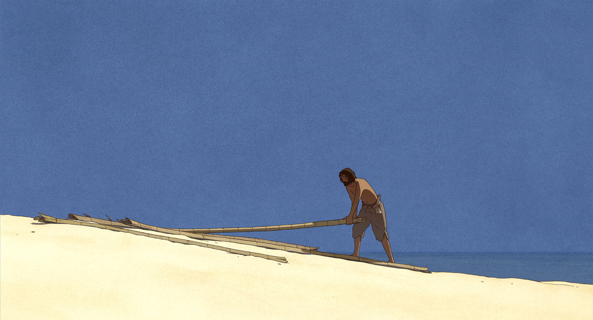

mrshll.com
This site is called mmx

mmx was {built} at the start of 2021. Largely inspired by others on [webring], especially [Devine], the site aims to be a long term repository for my writing, notes, and research. Entries on my previous site (a tower of tangled javascript dependencies) were ported over.
The site’s compiler is written in [Go]. It can generate a graph of entries from a modified version of [Indental] as well as markdown with frontmatter.
Entries have names, hosts, titles, and bodies. They optionally have dates. A host can optionally embed its children - {reading} being a key example. A reference graph is linked after the entries are generated, enabling inbound and outbound relationships to be formed. {home} is a special case that has its own generator function to render the timeline.
Go’s [templating engine] is lightly used, but it’s often more straightforward to generate the html directly into a string (it’s a “functional component” after all).
The wood thrush, it is! Now I know- Learning the Name by Ursula K. Le Guin
who sings that clear arpeggio,
three far notes weaving
into the evening
among leaves
and shadow;
or at dawn in the woods, I’ve heard
the sweet ascending triple word
echoing over
the silent river —
but never
seen the bird.
A poem by Ursula K. Le Guin is encoded into unicode’s representation of braille and used as the hr across the site.